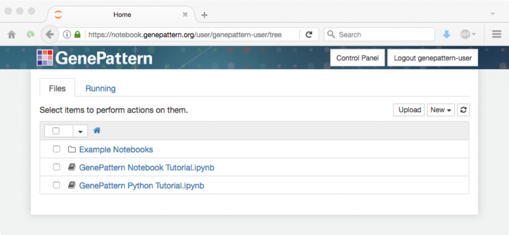
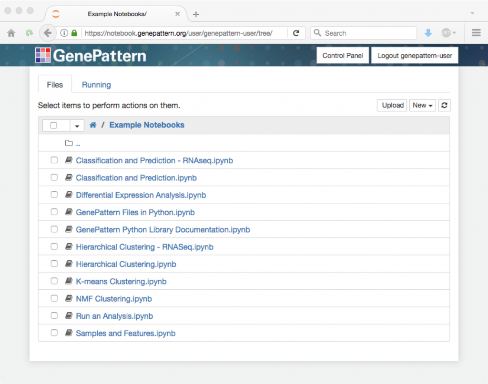

Notebook Collection
The following GenePattern Notebook files provide examples of how to perform analyses using the GenePattern Notebook environment. To view and use these notebooks in your own GenePattern Notebook environment:
- Log in to the GenePattern Notebook Repository
- You will see a listing of files similar to that shown below
- If you are new to GenePattern Notebook, select one of the tutorial notebooks in the home directory. You can click on these to learn the basics of the notebook environment.

- To view analysis-based notebooks, navigate to the Public Notebooks tab.
- You will see a listing of notebooks. Click on any of these notebooks and select Get a Copy. Click on the "Click here" link in the resulting dialog and follow the instructions in blue.
